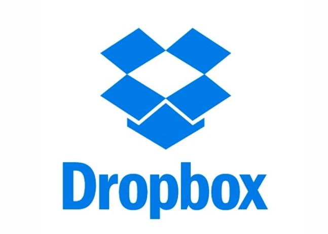
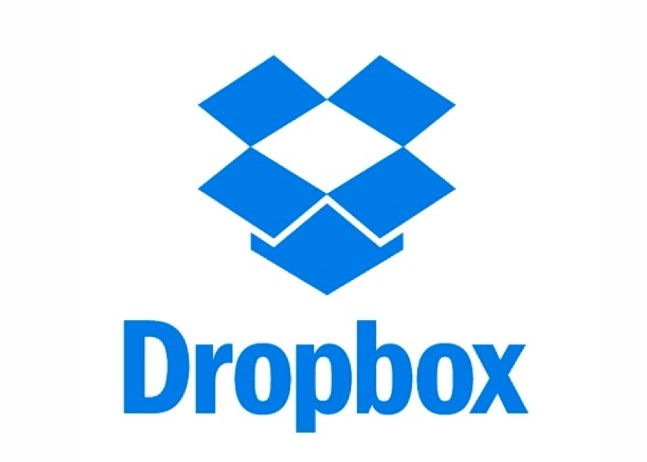
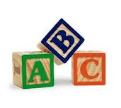
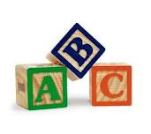
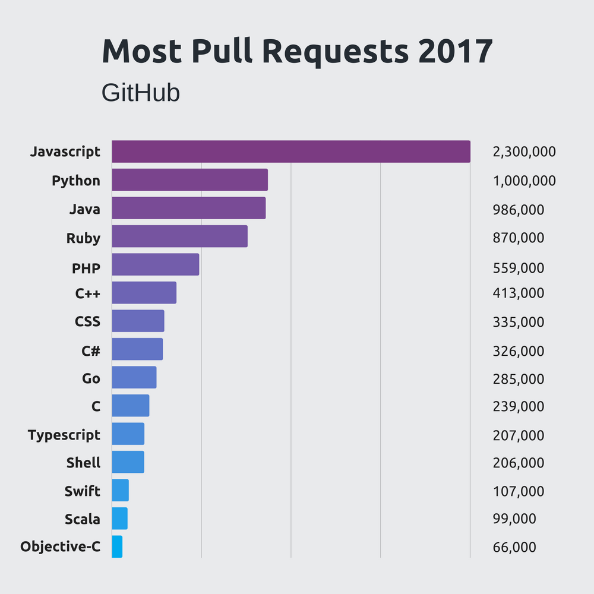
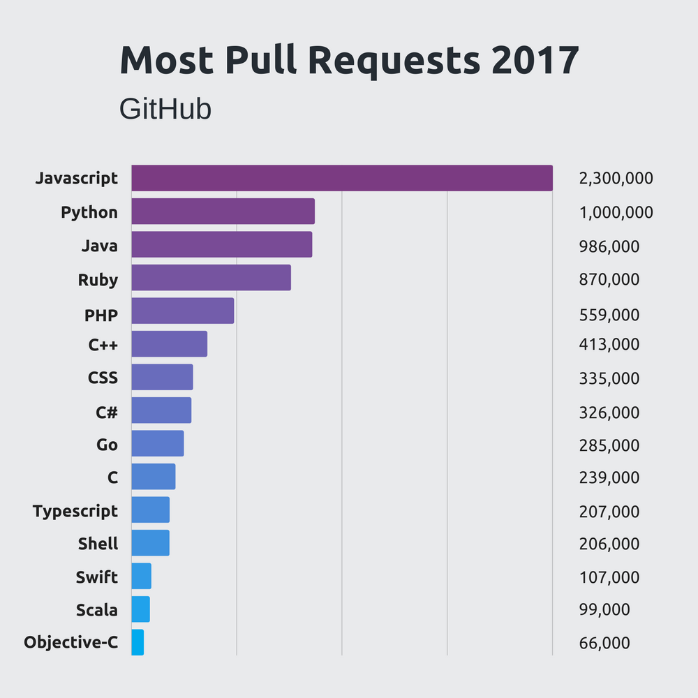

Guido van Rossum es un científico de la computación, conocido por ser el autor del lenguaje de programación Python. Nació y creció en los Países Bajos.
En el ambiente de los desarrolladores del lenguaje Python también se le conoce por el título BDFL ("Benevolent Dictator for Life"), teniendo asignada la tarea de fijar las directrices sobre la evolución de Python, así como la de tomar
decisiones finales sobre el lenguaje que todos los desarrolladores acatan. Van Rossum tiene fama de ser bastante conservador, realizando pocos cambios al lenguaje entre versiones sucesivas, intentando mantener siempre la compatibilidad con
versiones anteriores. El 12 de julio de 2018, con un mensaje enviado a la lista de python-committers, anunció su retiro de los procesos de decisión.
En el año 2001 recibió el FSF Award for the Advancement of Free Software como reconocimiento por su trabajo. En diciembre de 2005 fue contratado como desarrollador por la empresa estadounidense Google. Después de siete años en Google, a
principios de diciembre de 2012, anuncia su retirada de la empresa norteamericana para incorporarse en enero de 2013 a la plantilla de la compañía Dropbox.

 

Estudios y lugares donde ha trabajado
Van Rossum nació y creció en los Países Bajos, donde obtuvo su titulación universitaria en matemáticas y computación por la Universidad de Ámsterdam en 1982. A lo largo de su vida ha trabajado tanto en la industria, ya mencionado en la introducción, como en diversos centros de investigación como el instituto holandés Centrum Wiskunde & Informática (CWI), el estadounidense Instituto Nacional de Estándares y Tecnología o la Corporación para las Iniciativas Investigadoras Nacionales en Resto, Virginia.
Aportes más importantes
Python:
Van Rossum escribió en 1996:
"Hace seis años, en diciembre de 1989, estaba buscando un proyecto de programación como hobby que me mantuviera ocupado durante las semanas de Navidad. Mi oficina estaría cerrada y no tendría más que mi ordenador de casa a mano. Decidí
escribir un intérprete para el nuevo lenguaje de scripting que había estado ideando recientemente: un descendiente de ABC que gustaría a los hackers de Unix/c. Elegí el nombre de Python para el proyecto, encontrándome en un estado de ánimo
ligeramente irreverente (y siendo un gran fan de Monty Python's Flying Circus)."
En el año 2000 agregó:
"El predecesor de Python, ABC, estaba inspirado en SETL - Lambert Meertens se pasó un año trabajando en el grupo de SETL en la Universidad de Nueva York antes de que surgiera el diseño final de ABC."
 

Programación para todos:
En el año 1999 Van Rossum realizó una propuesta a DARPA llamada Computer Programming for Everybody, en la que describió qué y cómo debería ser Python:
- Python debería ser fácil, intuitivo y tan potente como sus principales competidores.
- El proyecto sería de Código Abierto para que cualquiera pudiera colaborar.
- El código escrito en Python sería tan comprensible como cualquier texto en inglés.
- Python debería ser apto para las actividades diarias permitiendo la construcción de prototipos en poco tiempo.
Python es al día de hoy uno de los lenguajes de programación más populares. En 2011 se proclamó el tercer lenguaje más popular de la forja GitHub y según la encuesta se encuentra entre los 10 lenguajes de programación más demandados en las
ofertas de trabajo.
Haciendo referencia a este articulo del 2018, Python se encuentra como el segundo lenguaje de programación más demandado.
Según este articulo de Stackify, evaluaron diversos factores respecto a los lenguajes de programación, como cuales eran los mejores, cuales eran más solicitados en los trabajos, entre otros. Algo que llama la atención es que Python se encuentra en todas las tablas en posiciones elevadas, esto demuestra la importancia del trabajo de Guido van Rossum. A continuación podemos observar algunas tablas de este estudio:
 

¿Por qué lo elegí?
Cuando comencé a trabajar en este proyecto quise incluir a alguien relacionado a mi carrera, investigando un poco encontré la historia de van Rossum, es impresionante todo lo que ha logrado, desde crear un lenguaje de programación (el cual se
encuentra muy bien posicionado en la actualidad), hasta trabajar en grandes empresas como lo son Google y Dropbox. En mis metas no tengo contemplado ser el creador de un lenguaje, pero luego de leer su historia me hizo pensar… ¿Por qué
no?
Si nos proponemos metas y somos aplicados, constantes y con una gran determinación todo es posible, me gustaría seguir los pasos de van Rossum y revolucionar la industria de la programación.